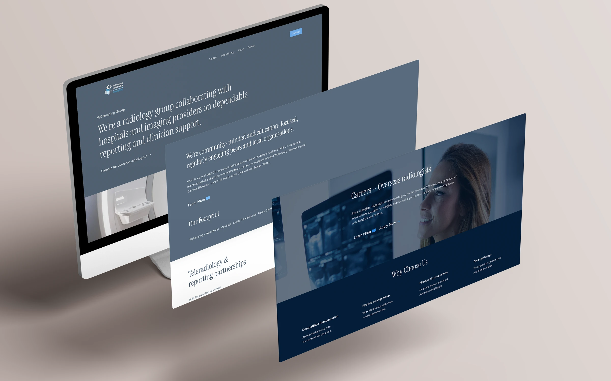
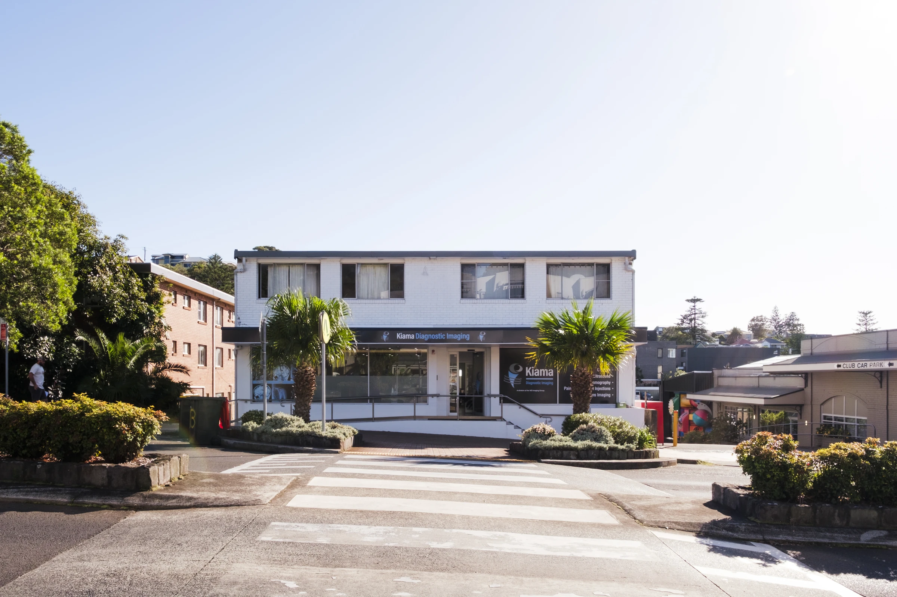
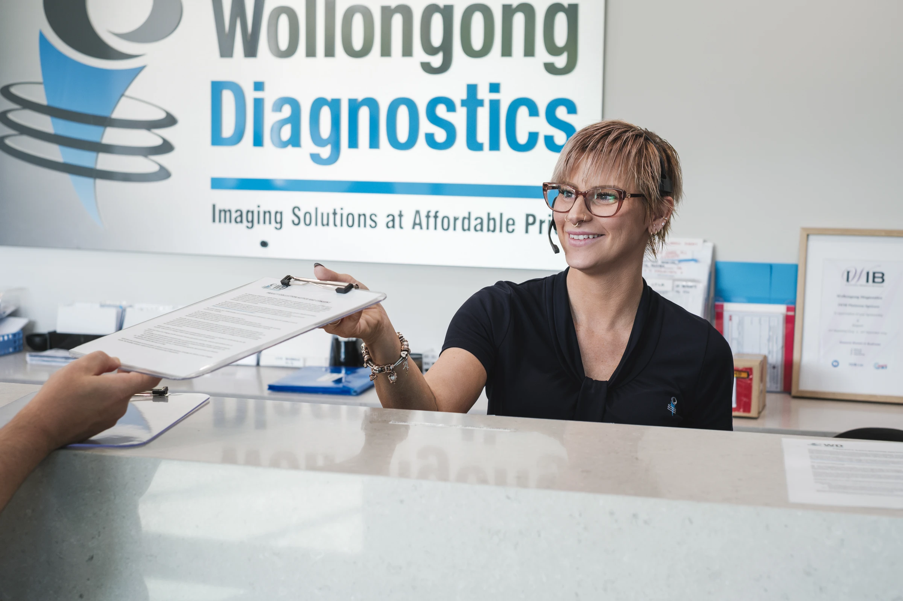
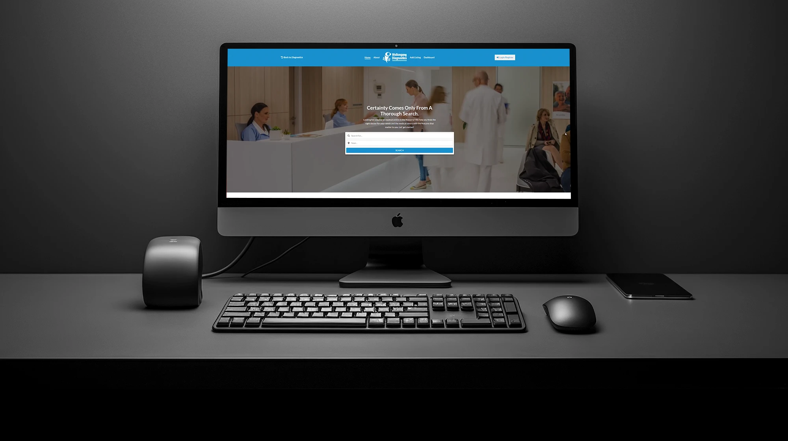
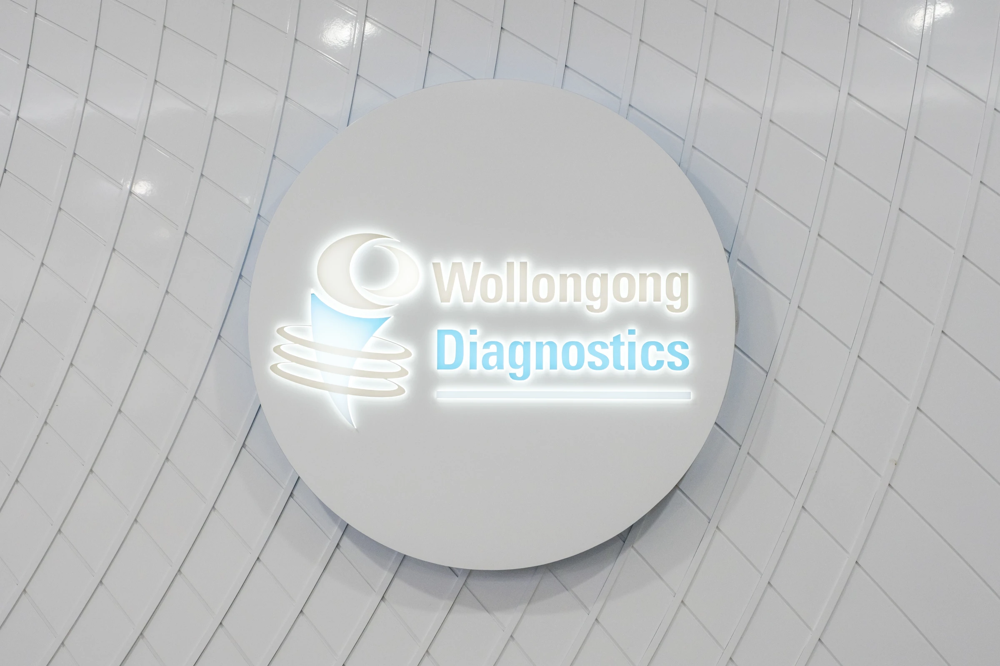

Case Study — Radiology
WD Imaging Group.
Website and digital marketing for a diagnostic-imaging group expanding to five practices — built to scale with them.

01 / The brief
A group expanding to five practices, needing one system to grow with.
WD Imaging was scaling to five practices and needed a website and marketing system that could grow with it — and bring referrals and self-referrals through search.
Growth multiplies the marketing problem — unless the system scales with it.
02 / What we did
One scalable system, mapped to how patients search.
We built a website that could expand across practices, then aligned search and advertising to how patients and referrers actually look for imaging.
Scalable website
A website built to expand across practices, so each new location plugs into one consistent system.
SEO that maps to search
Pages mapped to how patients and referrers actually search for diagnostic imaging — compounding over time.
Compliant Google Ads
Advertising placed at the moment of intent, written to stay within the rules for regulated health services.
Clear reporting
Reporting tied to conversions, so every channel is measured against the leads it actually produces.
03 / The work
A look at what we built.
Website, service pages and search-led campaign work — designed to grow conversions across every practice.





04 / The result
From 1,356 to 15,752 conversion actions a quarter.
Over three years, search-conversion actions grew 11.6× per quarter, total leads rose 114% year on year, Google Organic was up 90% and Google Ads up 124%.
Next project
WebDoctor ↗Where to go from here
Could your practice be the next case study?
A call with Ryan is a fifteen-minute conversation — no obligation, no preparation needed. We will tell you honestly whether Adcraft is the right fit.
Book a call with Ryan ↗